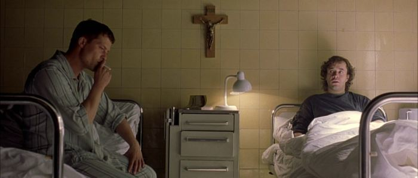

Two young people - Martin Brest, who is not particularly bothered by the rules, and Rudy Wurlitzer, who is law-abiding - after being examined at the hospital, find out that they have cancer: Martin has an inoperable brain tumor, and Rudy has terminal bone sarcoma. They are in the same ward. During the conversation, the crucifix hanging above their beds suddenly falls on the bedside table, which contains a bottle of tequila. Newly made friends drink it, and at the same time find out that Rudy has never seen the sea.